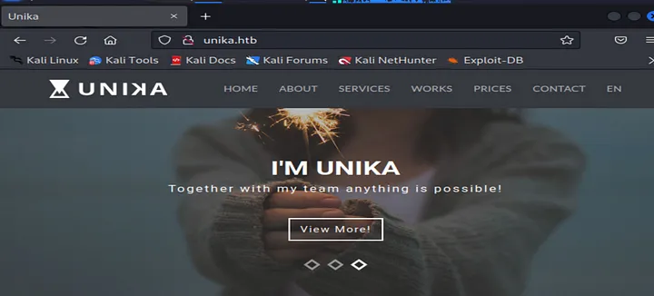

TASK 1 — When visiting the web service using the IP address, what is the
domain that we are being redirected to?
When attempting to access the IP address through a web browser, it will
redirect to unika.htb, but the connection will not succeed.
In order to view the webpage, you will need to add the target IP to the
/etc/hosts file. Then, open a text file editor in the terminal and enter the
hostname and IP address of the page.
The page will now load in the web browser.

TASK 2 — Which scripting language is being used on the server to generate webpages?
Running Nmap scan to generate a list of available ports. The results showed
that port 80 for web service is active and provided details about the service.
In addition, itindicated that Apache is using PHP to generate the webpage.
TASK 3 — What is the name of the URL parameter which is used to load
different language versions of the webpage?
To switch between other languages, the page parameter is utilized. Once the
language is changed, the URL in the address bar reflects this change, as
illustrated in the example below.
TASK 4 — Which of the following values for the `page` parameter would be
an example of exploiting a Local File Include (LFI) vulnerability:
“french.html,” “//10.10.14.6/somefile”,
“../../../../../../../../windows/system32/drivers/etc/hosts”, “minikatz.exe”
To exploit a Local File Include vulnerability, the parameter used is
../../../../../../../../windows/system32/drivers/etc/hosts. Using “../” enables access to
the “etc/hosts.”
TASK 5 — Which of the following values for the `page` parameter would be
an example of exploiting a Remote File Include (RFI) vulnerability:
“french.html,” “//10.10.14.6/somefile”,
“../../../../../../../../windows/system32/drivers/etc/hosts”, “minikatz.exe”
To exploit the Remote File Include, it needs to have an IP address of the
target machine, in this case,//10.10.14.6/somefile.
TASK 6 — What does NTLM stand for?
NTLM stands for New Technology LAN Manager, which comprises a group of
security protocols designed for Microsoft Windows. It employs a challenge-
response mechanism to authenticate clients and servers. However, Microsoft
advises against using NTLM for contemporary applications because of its
insufficient encryption.
TASK 7 — Which flag do we use in the Responder utility to specify the
network interface?
Responder uses a flag denoted by -I followed by the interface name to
specify the networking interface.
First, identify the IP using the command “ip a |grep + network interface.”
We can check if Responder captures an event to see if Responder is working
correctly. To do this, attempt to open a shared file using the IP and a shared
folder name on your web browser. However, this action will likely be denied
due to the folder needing to be available and needing permission.
In the terminal where Responder was operating, NTLM information
includes the client's IP, username, and password hash.
TASK 8 — There are several tools that take a NetNTLMv2
challenge/response and try millions of passwords to see if any of them
generate the same response. One such tool is often referred to as `john`,
but the full name is what?.
Once you have copied the hash, use the command "echo" to transfer it into a
file. Afterward, verify that the file has been saved by checking the directory
using the "ls" command.
Next, follow these steps to unzip the “RockYou” wordlist file.
I used the command “john” to execute the wordlist and match it with the
password hash file.
TASK 9 — What is the password for the administrator user?
The administrator user’s password is “badminton,” which was determined
from the step-by-step instructions in the previous task.
TASK 10 — We’ll use a Windows service (i.e. running on the box) to remotely
access the Responder machine using the password we recovered. What port
TCP does it listen on?
The TCP port it listens on is 5985; its information can be easily found by
scanning with Nmap.
SUBMIT FLAG
Let’s proceed with the flag hunt by utilizing evil-winrm, a package that
includes Windows Remote Management for accessing the target computer.
Finally, we have all the necessary information, including the IP address,
username, and password.
To move between directories and folders, the command “cd” can be used,
while the contents of a folder can be listed using “dir.” The flag was hidden on the user Mike.
 To reveal the flag, use the “type” command.
I have all the answers to the tasks in the images provided. Pweding
Responder machine was such a fun experience!
To reveal the flag, use the “type” command.
I have all the answers to the tasks in the images provided. Pweding
Responder machine was such a fun experience!